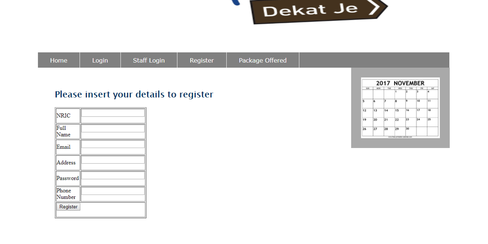
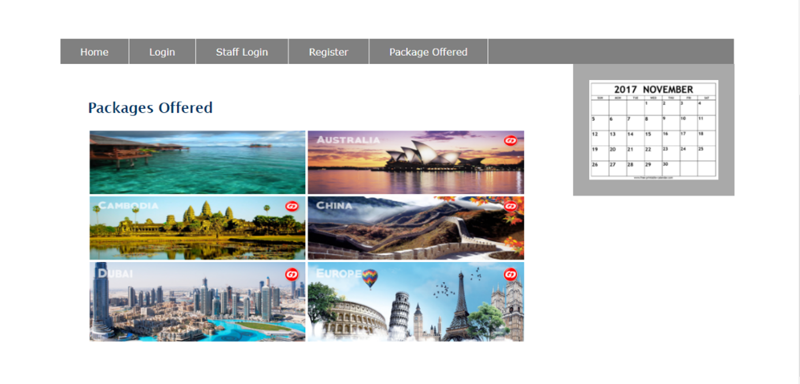
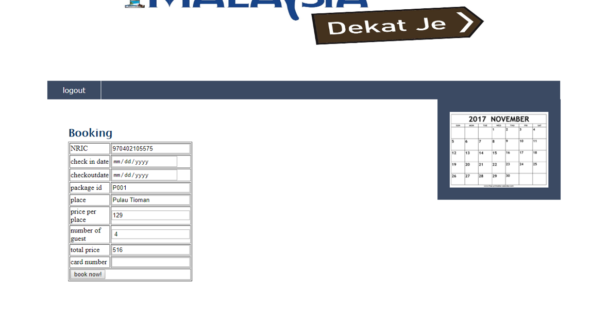
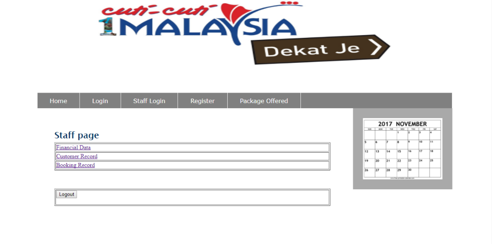

Cuti - Cuti Travelling System
The idea of Cuti - Cuti Travelling System comes from the busy life we living making our time limited to plan a trip to travel. So, in order to ease our life, I have decided to develop a travelling system called “Cuti-Cuti” for people who wants to travel but do not have time to plan the trip. Cuti - Cuti Travelling system is developed using HTML, SQL, PHP, and javascript language.



